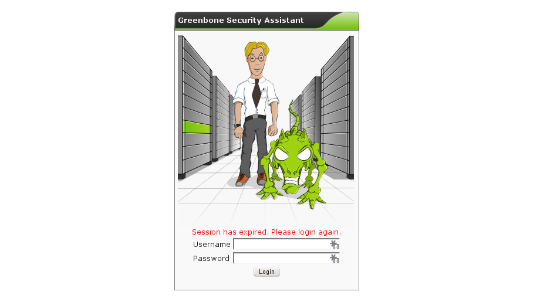

Change OpenVAS Session Time
Here is a small piece of knowledge that prevented me from going nuts. Set you OpenVAS session expiry time before it drives you crazy!
Openvas is a great vulnerability scanner, but the default session expiry time is set to 15 minutes, which is just plain annoying when you're running a scan and want to check in on it every know and then.

Set Session Expire Time in GreenboneSecurityAssistant (GSA) to 60 Minutes by adjusting the init script. Depending on your